はじめに
Autonomous Database(ADB)は、毎週末事前定義されたメンテナンス・ウィンドウの中でデータベースに自動的にパッチを適用します。
通常のパッチ周期に先行して1週早くパッチを適用できる早期パッチという機能があります。テスト環境用ADBを早期パッチで作成しておくことで、本番環境適用前にパッチ適用の影響テストを行うことができます。
また、ADBでは、Oracle Databaseオプション「Real Application Testing(RAT)」に含まれる機能の1つであるDatabase Replay(DB Replay)を使用することができます。 さらにDB Replayを自動で毎週行う自動ワークロード・リプレイという機能があります。こちらを使用すると、毎週決まった時間に本番環境のワークロードをキャプチャして、早期パッチを適用したテスト環境にそのワークロードをリプレイすることができます。
こちらでパッチの影響を確認し、もしエラーが発生した場合はOracle社にサポート・リクエストを発行し報告することで、Oracle社が該当パッチを修正もしくは通常パッチでは適用しないなどの対応を行います。
こちらが早期パッチと自動ワークロード・リプレイを利用したテストフローになります。
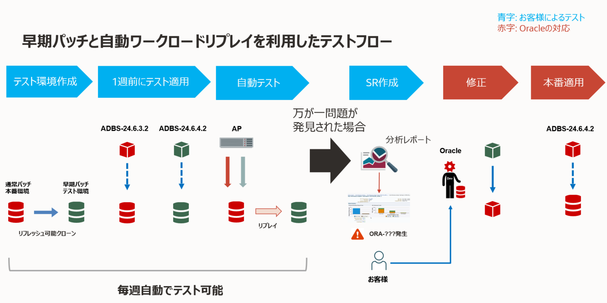
本チュートリアルでは、早期パッチと自動ワークロード・リプレイを併用することで、本番環境へのパッチ適用の影響をテスト環境で事前に確認する手順をご紹介します。
目次 :
- はじめに
- 1. 環境の準備
- 2. 本番環境で使用するデータの準備
- 3. テスト環境用ADBの作成
- 4. 自動ワークロード・リプレイの有効化
- 5. イベント通知の設定
- 6. 本番環境へのワークロードの実行
- 7. レポートの確認
- おわりに
前提条件
-
ADBインスタンスが構成済みであること
※ADBインタンスの作成方法については、 101:ADBインスタンスを作成してみよう を参照ください。 -
開発者向けの仮想マシンが構成済みであること
※作成方法については、 204: 開発者向け仮想マシンのセットアップ方法 を参照ください。 -
作成した仮想マシンからADBへSQL*Plusで接続ができること
※接続方法については、 104: クレデンシャル・ウォレットを利用して接続してみよう を参照ください。
所要時間 : 約60分
1. 環境の準備
まずは本チュートリアルで使用する環境の準備を行います。
まずは本番環境用ADBであるATPRD01を作成します。ADBの構成は以下になります。なお、本記事ではADBをはじめとする各リソースは全てTokyoリージョンで作成します。
- 表示名 : ATPRD01
- データベース名 : ATPRD01
- ワークロード・タイプ : トランザクション処理
- デプロイメント・タイプ : サーバーレス
- データベース・バージョンの選択 : 19c
- ECPU数 : 任意(Swingbenchでのデータ生成時間を短縮する場合は大きく設定)
- ストレージ(GB) : 任意(50GB以上)
- バックアップ保持期間 : 1~60日で選択(任意)
- 管理者資格証明の作成 : Welcome12345#
- ネットワーク・アクセスの選択 : 任意(NW設定が面倒な場合は、すべての場所からのセキュア・アクセス)
- ライセンスとOracle Databaseエディションの選択 : ライセンス込み
2. 本番環境で使用するデータの準備
今回はOracle Database の負荷掛けツールであるSwingbenchのSOE(oewizard)スキーマを本番環境のワークロードとして利用します。
仮想マシン上に接続し、oracleユーザーへスイッチします。
sudo su - oracle
作業用ディレクトリを作成して、移動します。
mkdir -p labs/swingbench
cd labs/swingbench
Swingbenchをダウンロードします。wgetもしくはcurlコマンドをご利用ください。（数分程度かかります。）
wget https://github.com/domgiles/swingbench-public/releases/download/production/swingbench25052023.zip -O swingbenchlatest.zip
展開します。
unzip swingbechlatest.zip
ADBのウォレットファイルが以下に配置されていることを確認してください。
cd ../wallets
ls
以下のように出力されればOKです。
Wallet_ATPRD01.zip
念のためSQL*Plusでログインできることを確認します。
sqlplus admin/Welcome12345#@ATPRD01_tp
ここでADBに接続できない場合、104: クレデンシャル・ウォレットを利用して接続してみよう を参照して再度設定してください。
カレント・ディレクトリを確認します。
pwd
以下のディレクトリにいればOKです。
/home/oracle/labs/swingbench
SOEスキーマを作成していきます。
./swingbench/bin/oewizard -cf ~/labs/wallets/Wallet_ATPRD01.zip -cs ATPRD01_tp -ts DATA -dbap Welcome12345# -dba admin -u soe -p Welcome12345# -async_off -scale 10 -create -cl -v -tc 10
それぞれのパラメータは以下の通りです。
- -cf: ADBを使う場合のWalletのパスを指定
- -cs: 接続サービス名(ATPRD01_tp等)
- -ts: 表領域(ADBの場合はDATA)
- -dbap: スキーマ作成する管理者ユーザーのパスワード(今回はWelcome12345#)
- -dba: スキーマ作成する管理者ユーザー(ADMINを指定)
- -u: スキーマ名(今回はsoeと指定)
- -p: 作成するスキーマのパスワード(今回はWelcome12345#と指定)
- -async_off: 非同期トランザクションなしで実行（デフォルトはあり）
- -scale: データ量（デフォルトはデータ量1GBなので10だと10GB)
- -create: ベンチマークスキーマを作成する
- -cl: キャラクタモードで実行する
- -v: コマンドラインから実行される場合verboseモードで実行
- -tc: データ生成する場合の並列度
このコマンドはECPU数によってはかなり時間がかかります。短縮したい場合は一時的にECPU数を上げて実行してください。
作成されたスキーマを確認します。
./swingbench/bin/sbutil -cf ~/labs/wallets/Wallet_ATPRD01.zip -cs ATPRD01_tp -u soe -p Welcome12345# -soe -val
出力が以下のようになればスキーマが正しく作成されています。
Operation is successfully completed.
Operation is successfully completed.
The Order Entry Schema appears to be valid.
--------------------------------------------------
|Object Type | Valid| Invalid| Missing|
--------------------------------------------------
|Table | 10| 0| 0|
|Index | 26| 0| 0|
|Sequence | 5| 0| 0|
|View | 2| 0| 0|
|Code | 1| 0| 0|
--------------------------------------------------
統計情報を収集します。(オプション)
./swingbench/bin/sbutil -cf ~/labs/wallets/Wallet_ATPRD01.zip -cs ATPRD01_tp -u soe -p Welcome12345# -soe -stats
出力結果
Operation is successfully completed.
Operation is successfully completed.
Collecting statistics for the schema
Collected statistics in : 0:03:54.529
どのようなテーブルが作成されているか確認します。
./swingbench/bin/sbutil -cf ~/labs/wallets/Wallet_ATPRD01.zip -cs ATPRD01_tp -u soe -p Welcome12345# -soe -tables
出力結果
Operation is successfully completed.
Operation is successfully completed.
Order Entry Schemas Tables
+----------------------+------------+---------+---------+-------------+--------------+
| Table Name | Rows | Blocks | Size | Compressed? | Partitioned? |
+----------------------+------------+---------+---------+-------------+--------------+
| ORDER_ITEMS | 71,035,789 | 658,327 | 5.0GB | Disabled | No |
| ORDERS | 14,297,900 | 256,800 | 2.0GB | Disabled | No |
| CUSTOMERS | 10,000,000 | 195,932 | 1.5GB | Disabled | No |
| ADDRESSES | 15,000,000 | 171,890 | 1.3GB | Disabled | No |
| CARD_DETAILS | 15,000,000 | 119,237 | 936.0MB | Disabled | No |
| LOGON | 23,829,840 | 84,557 | 664.0MB | Disabled | No |
| INVENTORIES | 898,587 | 2,386 | 19.0MB | Disabled | No |
| PRODUCT_DESCRIPTIONS | 1,000 | 35 | 320KB | Disabled | No |
| PRODUCT_INFORMATION | 1,000 | 28 | 256KB | Disabled | No |
| WAREHOUSES | 1,000 | 5 | 64KB | Disabled | No |
| ORDERENTRY_METADATA | 4 | 5 | 64KB | Disabled | No |
+----------------------+------------+---------+---------+-------------+--------------+
Total Space 11.4GB
ここまでで本番環境のワークロードとして利用するSOEスキーマの作成は完了です。
3. テスト環境用ADBの作成
今回使用する自動ワークロード・リプレイ機能は、本番環境用インスタンスのリフレッシュ可能クローンを早期パッチで作成することが前提となっています。
OCIコンソールからテスト環境用ADBとしてATPRD01のリフレッシュ可能クローンEarlyATPRD01を作成します。
ATPRD01の詳細画面で、[More actions]→クローンの作成をクリックします。
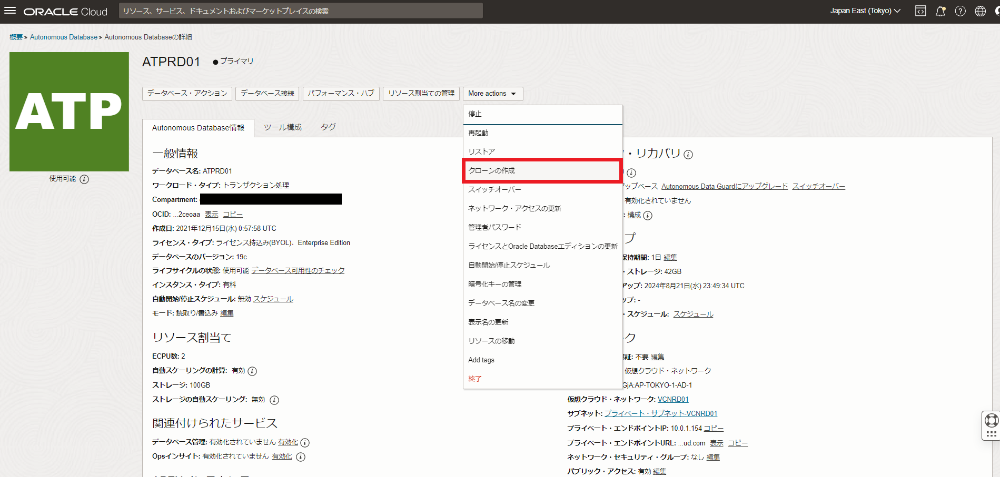
クローン・タイプの作成で、リフレッシュ可能クローンを選択します。
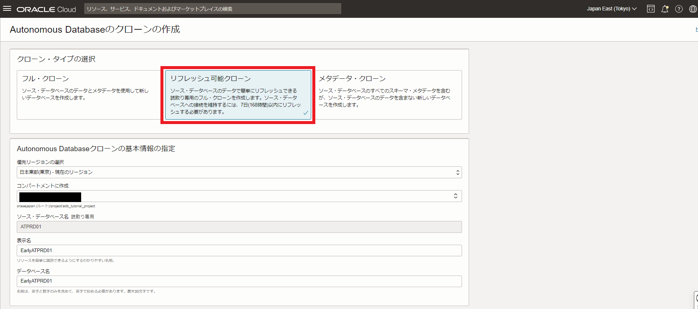
データベースの構成やネットワーク・アクセスの選択はデフォルト設定のままでOKです。クローン元であるATPRD01の設定が引き継がれます。
画面下部のShow advanced optionsをクリックし、[メンテナンス]のパッチ・レベルを早期に設定して作成します。
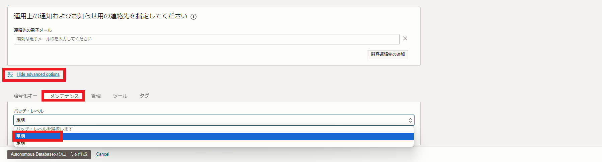
リフレッシュ可能クローンEarlyATPRD01が作成されたら、詳細画面からOCIDをコピーしておきます。
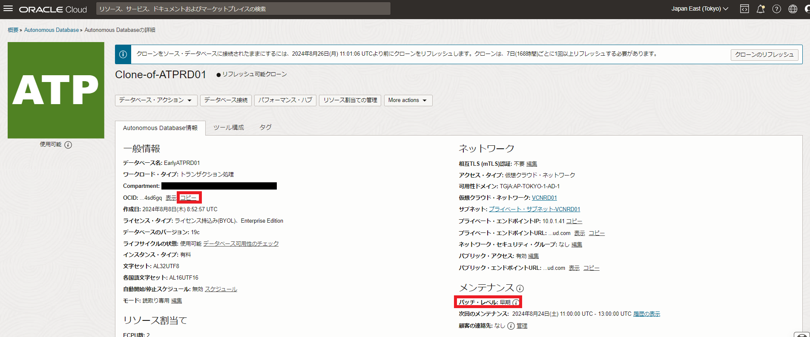
リフレッシュ可能クローンが早期パッチで作成されていることを確認してみます。
まず通常パッチのATPRD01のメンテナンスの履歴の表示をクリックします。
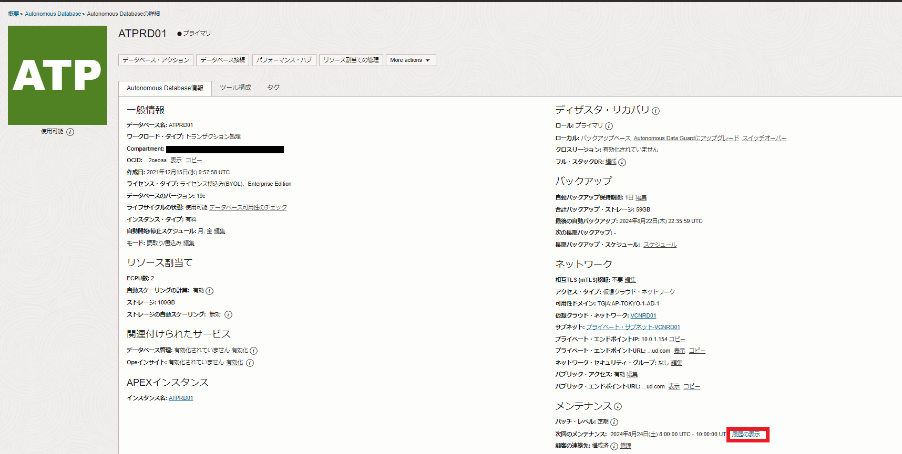
ここでは過去のメンテナンス履歴と適用されたパッチが確認できます。
最新のパッチのバージョンはADBS-24.8.2.2となっています。
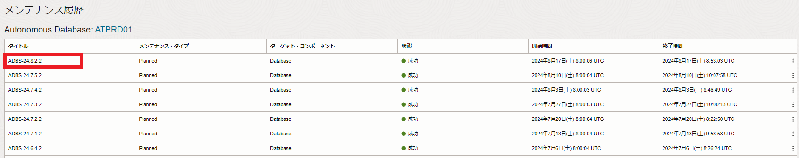
次に早期パッチで作成したEalryATPRD01のパッチ履歴を確認してみます。
先ほどと同様の手順で確認すると、以下のようになっています。
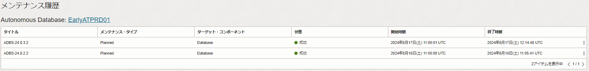
最新のパッチのバージョンがADBS-24.8.3.2となっています。
※作成直後はパッチが当たらないので履歴にも情報がありません。一度週末をまたいでパッチが適用された後に上記を確認してください。
4. 自動ワークロード・リプレイの有効化
テスト環境の構築ができたので、本番環境で自動ワークロード・リプレイを有効化します。
本番環境用インスタンスATPRD01へ接続します。
sqlplus admin/Welcome12345#@ATPRD01_tp
自動ワークロード・リプレイを以下のように有効化します。
BEGIN
DBMS_CLOUD_ADMIN.ENABLE_FEATURE(
feature_name => 'WORKLOAD_AUTO_REPLAY',
params => JSON_OBJECT(
'target_db_ocid' VALUE 'ocid1.autonomousdatabase.oc1.ap-tokyo-1.xxxxxx',
'capture_duration' VALUE 15,
'capture_day' VALUE 'TUESDAY',
'capture_time' VALUE '00:30'));
END;
/
それぞれのパラメータは以下の通りです。
- target_db_ocid: 作成したリフレッシュ可能クローンのOCID[必須]
- capture_duration: ワークロードをキャプチャする期間(1分~720分で指定可能)[必須]
- capture_day: キャプチャを開始する曜日(UTC)[任意]
- capture_time: キャプチャを開始する時間(UTC)[任意]
capture_dayとcapture_timeを指定しない場合、上記のENABLE_FEATUREプロシージャを有効化した時点から数時間後にキャプチャが開始されます。(2024/8時点)
capture_dayとcapture_timeを指定した場合、翌週のその曜日のその時間からキャプチャが開始されます。上記の例では毎週火曜日の9:30~9:45でキャプチャされ、その後リプレイされます。
注意
capture_dayには曜日を指定しますが、メンテナンスの時刻に近いため、金曜(FRIDAY)/土曜(SATURDAY)の指定はできません。
ワークロードのキャプチャを行うのは、日～木を指定してください。
自動ワークロード・リプレイが有効化されているかは以下で確認できます。
select * from dba_cloud_config where param_name = 'workload_auto_replay';
以下のようにenabledとなっていれば有効化されています。
PARAM_NAME PARAM_VALUE
_______________________ ______________
workload_auto_replay enabled
なお無効化する場合は以下を実行します。
BEGIN
DBMS_CLOUD_ADMIN.DISABLE_FEATURE(
feature_name => 'WORKLOAD_AUTO_REPLAY');
END;
/
5. イベント通知の設定
自動ワークロード・リプレイでは、本番環境でキャプチャが開始/終了したタイミングと、テスト環境でリプレイが開始/終了したタイミングで、イベントが発行されます。このイベントにはワークロード・リプレイのレポートをダウンロードできるPAR URL(事前認証済みリクエスト)が含まれます。
このイベントをOCI Eventsで受け取るように設定し、Notificationsでメールアドレス等に通知させるようにすれば、自動ワークロード・リプレイの動作をユーザー側で確認することができます。
それではこれらの設定をしていきます。
まずは通知先の設定をしていきます。こちらを参考に、メールアドレス等で通知を受け取れるようにします。
続いてイベントの設定をしていきます。
OCIコンソールのハンバーガーメニューから、監視および管理をクリックし、イベント・サービスのルールをクリックします。
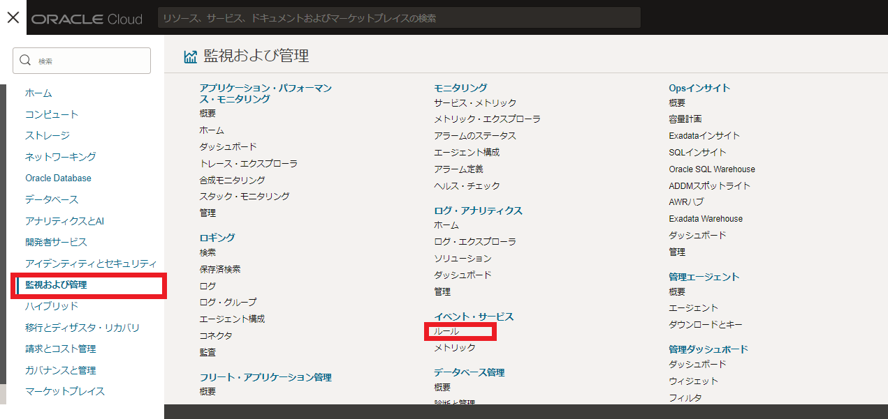
続いてルールの作成画面で以下のように設定します。
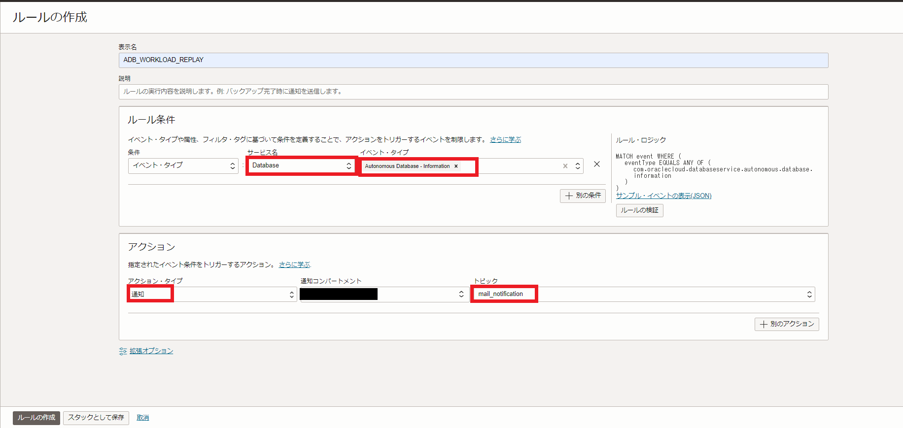
設定項目は以下の通りです。
- 表示名: 任意(ADB_WORKLOAD_REPLAY)
- 条件: イベント・タイプ
- サービス名: Database
- イベント・タイプ: Autonomous Database - Information
- アクション・タイプ: 通知
- 通知コンパートメント: 作業中のコンパートメント
- トピック: 先ほど作成したトピック
こちらでルールの作成が完了です。
Autonomous Database - Informationというイベント・タイプの中に、自動ワークロード・リプレイ関連のイベントが含まれているため、キャプチャの開始/終了、リプレイの開始/終了イベントをメールに通知させることができます。
6. 本番環境へのワークロードの実行
実際に本番環境へSwingbenchで負荷掛けをしていきます。
今回はコマンドラインから実行できるcharbenchを利用します。
カレント・ディレクトリを確認します。
pwd
以下のように出力されればOKです。
/home/oracle/labs/swingbench
charbenchを実行します。
./swingbench/bin/charbench -c ../configs/SOE_Server_Side_V2.xml -cf ~/labs/wallets/Wallet_ATPRD01.zip -cs ATPRD01_tp -u soe -p Welcome12345# -uc 10 -min 0 -max 10 -intermin 200 -intermax 500 -v users,tpm,tps,errs,vresp
しばらくすると以下のような出力がされます。
08:37:06 [10/10] 1706 28 0 6 2 3 9 5 8 0 0 0
08:37:07 [10/10] 1702 27 0 5 2 3 12 5 4 0 0 0
08:37:08 [10/10] 1701 28 0 6 2 2 32 5 14 0 0 0
08:37:09 [10/10] 1700 29 0 6 4 2 9 5 14 0 0 0
08:37:10 [10/10] 1699 29 0 7 2 3 10 5 14 0 0 0
08:37:11 [10/10] 1702 30 0 7 6 3 14 5 14 0 0 0
08:37:12 [10/10] 1698 25 0 6 2 4 8 5 5 0 0 0
08:37:13 [10/10] 1703 32 0 5 5 4 10 5 5 0 0 0
08:37:14 [10/10] 1705 29 0 5 5 2 10 8 4 0 0 0
08:37:15 [10/10] 1707 29 0 6 2 2 8 13 4 0 0 0
08:37:16 [10/10] 1703 27 0 6 2 4 10 5 3 0 0 0
これで本番環境用インスタンスに負荷掛けができている状態です。
キャプチャが開始される火曜日の9時30分(JST)にこの負荷掛けを行います。
7. レポートの確認
ここまでの手順が正しく行われていれば、自動ワークロード・リプレイを設定した曜日・時間にキャプチャが開始されるはずです。キャプチャが開始されると以下のようなメールが届きます。(一部マスクしています。)
{
"eventType" : "com.oraclecloud.databaseservice.autonomous.database.information",
"cloudEventsVersion" : "0.1",
"eventTypeVersion" : "2.0",
"source" : "DatabaseService",
"eventTime" : "2024-09-24T00:30:19Z",
"contentType" : "application/json",
"data" : {
"compartmentId" : "ocid1.compartment.oc1..aaaaaaaa",
"compartmentName" : "xxxx",
"resourceName" : "ATPRD01",
"resourceId" : "OCID1.AUTONOMOUSDATABASE.OC1.AP-TOKYO-1.XXXX",
"additionalDetails" : {
"dbName" : "ATPRD01",
"eventName" : "WorkloadCaptureBegin",
"description" : "The workload capture AUTOCAPTURE_ATPRD01_6E4D has begun in ATPRD01.",
"autonomousDataType" : "Serverless",
"workloadType" : "Transaction Processing"
}
},
"eventID" : "cb872c9b-a11f-4c2f-a0f8-f74fdceb4551",
"extensions" : {
"compartmentId" : "ocid1.compartment.oc1..aaaaaaaa"
}
}
capture_durationに15と設定しているので、その約15分後にキャプチャの終了イベントが通知されます。
{
"eventType" : "com.oraclecloud.databaseservice.autonomous.database.information",
"cloudEventsVersion" : "0.1",
"eventTypeVersion" : "2.0",
"source" : "DatabaseService",
"eventTime" : "2024-09-24T00:51:15Z",
"contentType" : "application/json",
"data" : {
"compartmentId" : "ocid1.compartment.oc1..aaaaaaaa",
"compartmentName" : "xxxx",
"resourceName" : "ATPRD01",
"resourceId" : "OCID1.AUTONOMOUSDATABASE.OC1.AP-TOKYO-1.XXXX",
"additionalDetails" : {
"captureDownloadURL" : "https://objectstorage.ap-tokyo-1.oraclecloud.com/p/xxxx/n/dwcsprod/b/adb_capture_replay/o/xxxx/CAP_22D1698050D6/cap/adb_capture_report.zip",
"eventName" : "WorkloadCaptureEnd",
"dbName" : "ATPRD01",
"description" : "The workload AUTOCAPTURE_ATPRD01_6E4D has been successfully captured in ATPRD01. You can use the URL provided in captureDownloadURL field to download the capture reports. The URL will be valid for 7 days.",
"workloadType" : "Transaction Processing",
"autonomousDataType" : "Serverless"
}
},
"eventID" : "8bba3ea9-5d83-4de4-b0ee-017a486e15f6",
"extensions" : {
"compartmentId" : "ocid1.compartment.oc1..aaaaaaaa"
}
}
キャプチャ終了時には、captureDownloadURLが提供されます。Oracleが管理するオブジェクトストレージにキャプチャ・レポートが保存され、そのPAR URL(事前認証済みリクエスト)です。ここからユーザーはキャプチャ結果をダウンロードできます。(期限は7日間なのでご注意ください。)
その後、リプレイ開始のイベントが通知されます。
{
"eventType" : "com.oraclecloud.databaseservice.autonomous.database.information",
"cloudEventsVersion" : "0.1",
"eventTypeVersion" : "2.0",
"source" : "DatabaseService",
"eventTime" : "2024-09-24T02:01:54Z",
"contentType" : "application/json",
"data" : {
"compartmentId" : "ocid1.compartment.oc1..aaaaaaaa",
"compartmentName" : "xxxx",
"resourceName" : "EarlyATPRD01",
"resourceId" : "OCID1.AUTONOMOUSDATABASE.OC1.AP-TOKYO-1.XXXX",
"additionalDetails" : {
"dbName" : "EarlyATPRD01",
"eventName" : "WorkloadReplayBegin",
"description" : "The workload replay has begun in EarlyATPRD01.",
"autonomousDataType" : "Serverless",
"workloadType" : "Transaction Processing"
}
},
"eventID" : "77d03a0f-6c87-4e84-8b66-4fd39a9ec158",
"extensions" : {
"compartmentId" : "ocid1.compartment.oc1..aaaaaaaa"
}
}
そしてリプレイ終了のイベントが通知されます。
{
"eventType" : "com.oraclecloud.databaseservice.autonomous.database.information",
"cloudEventsVersion" : "0.1",
"eventTypeVersion" : "2.0",
"source" : "DatabaseService",
"eventTime" : "2024-09-24T02:22:28Z",
"contentType" : "application/json",
"data" : {
"compartmentId" : "ocid1.compartment.oc1..aaaaaaaa",
"compartmentName" : "xxxx",
"resourceName" : "EarlyATPRD01",
"resourceId" : "OCID1.AUTONOMOUSDATABASE.OC1.AP-TOKYO-1.XXXX",
"additionalDetails" : {
"replayDownloadURL" : "https://objectstorage.ap-tokyo-1.oraclecloud.com/p/xxxx/n/dwcsprod/b/adb_capture_replay/o/xxxx/CAP_22D1698050D6/rep911454787/adb_replay_report.zip",
"eventName" : "WorkloadReplayEnd",
"dbName" : "EarlyATPRD01",
"description" : "The workload AUTOREPLAY_EarlyATPRD01_B044 has been successfully replayed in EarlyATPRD01. You can use the URL provided in replayDownloadURL field to download the replay reports. The URL will be valid for 7 days.",
"workloadType" : "Transaction Processing",
"autonomousDataType" : "Serverless"
}
},
"eventID" : "db28ad77-ff47-49bd-98d5-f0876dbd4165",
"extensions" : {
"compartmentId" : "ocid1.compartment.oc1..aaaaaaaa"
}
}
replayDownloadURLからテスト環境でのリプレイ結果のレポートをダウンロードできます。
以下のようなレポートが出力されます。
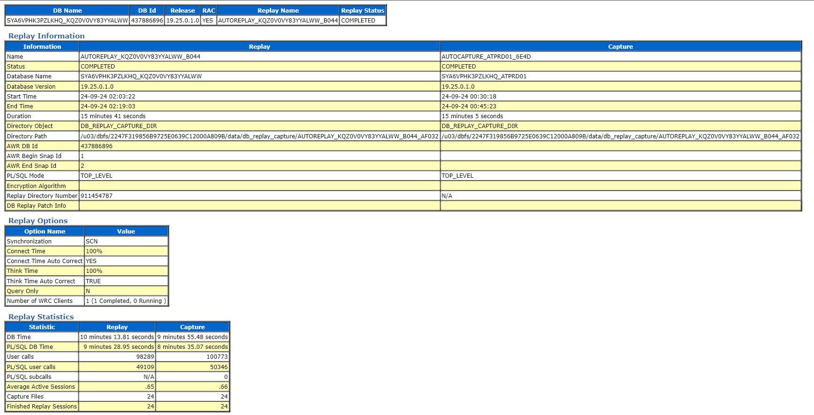
なおレポート結果やキャプチャ/リプレイの履歴はADBからも確認できます。
ワークロード・リプレイのステータスの確認はDBA_CAPTURE_REPLAY_STATUSビューから、履歴についてはDBA_CAPTURE_REPLAY_HISTORYビューからクエリできます。
ステータスの確認
select * from DBA_CAPTURE_REPLAY_STATUS;
キャプチャ開始時の出力結果
STATE PROGRESS
____________________________________________________ ___________
FINISH CAPTURE AUTOCAPTURE_ATPRD01_6E4D COMPLETED
キャプチャ終了時の出力結果
STATE PROGRESS
____________________________________________________ ___________
FINISH CAPTURE AUTOCAPTURE_ATPRD01_6ED4 COMPLETED
履歴の確認
select * from DBA_CAPTURE_REPLAY_HISTORY;
出力結果
ID NAME UNIQUE_NAME STATUS DATABASE_ID TYPE REPORT_URL ERROR_MESSAGE START_TIME END_TIME DATABASE_NAME
______ _______________________________ ___________________ __________ _______________________________________ __________ _____________________________________________________________________________________________________________________________________________________________________________________________________________________________________________ ________________ __________________________________ __________________________________ ________________
346 AUTOREPLAY_KQZ0V0VY83YYALWW_B044 SUCCESS a665449d-d5d5-40ce-adaa-8189b030f878 REPLAY https://objectstorage.ap-tokyo-1.oraclecloud.com/p/xxxx/n/dwcsprod/b/adb_capture_replay/o/xxxx/CAP_22D1698050D6/rep911454787/adb_replay_report.zip 24-SEP-24 02.03.22.000000000 AM 24-SEP-24 02.19.03.000000000 AM EarlyATPRD01
345 AUTOCAPTURE_ATPRD01_6E4D CAP_22D1698050D6 SUCCESS aa6152db-e5ea-4f04-8424-2d439e8545b7 CAPTURE https://objectstorage.ap-tokyo-1.oraclecloud.com/p/xxxx/n/dwcsprod/b/adb_capture_replay/o/xxxx/CAP_22D1698050D6/cap/adb_capture_report.zip 24-SEP-24 12.30.18.000000000 AM 24-SEP-24 12.45.23.000000000 AM ATPRD01
このようにイベント通知の設定をせずとも、ADBからキャプチャ/リプレイの結果レポートを取得することができます。 なおDBA_CAPTURE_REPLAY_HISTORYのデータは7日間でパージされます。
おわりに
本チュートリアルでは、パッチを通常より1週早く適用する早期パッチという機能と、本番環境のワークロードをキャプチャして、テスト環境で自動でリプレイする自動ワークロード・リプレイという機能をご紹介しました。これらを組み合わせることで、毎週のパッチ適用の影響を実際のワークロードに基づいたテストを自動で行うことができます。
以上でこの章は終了です。次の章にお進みください。